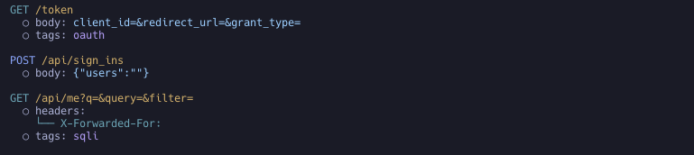

태거로 컨텍스트 분석하기
엔드포인트와 파라미터에 태그를 붙여 기능과 보안 위험 지점을 표시합니다.
태거는 엔드포인트와 파라미터에 태그를 붙입니다. 태그는 엔드포인트가 무슨 일을 하는지, 어디가 위험할 수 있는지를 알려 줍니다. 예를 들어 SQL 인젝션에 열려 있을 수 있는 파라미터나 로그인 엔드포인트가 그렇습니다.

태그는 내 돋보기야. redirect_url 같은 파라미터는 핸들러를 읽기도 전에 ssrf로 표시돼.

사용법
태거는 기본으로 꺼져 있습니다. --verbose, --ai-context, -f only-tag를 주면 모두 켜집니다. 직접 고르려면 다음 플래그를 쓰세요.
모든 태거 활성화 (-T / --use-all-taggers)
noir scan <BASE_PATH> -T
# 같은 명령: noir scan <BASE_PATH> --use-all-taggers
특정 태거만 활성화 (noir list taggers로 목록 확인)
noir scan <BASE_PATH> --use-taggers hunt,oauth
출력
태그는 엔드포인트와 각 파라미터의 tags 배열에 들어갑니다. 태그마다 필드가 세 개 있습니다:
| 필드 | 의미 |
|---|---|
name |
짧은 식별자. 예: sqli, oauth |
description |
사람이 읽는 설명 |
tagger |
태그를 붙인 태거. 예: 취약점 패턴은 Hunt, 인증 흐름은 Oauth |
{
"url": "/token",
"method": "GET",
"params": [
{
"name": "redirect_url",
"value": "",
"param_type": "form",
"tags": [
{
"name": "ssrf",
"description": "This parameter may be vulnerable to Server Side Request Forgery (SSRF) attacks.",
"tagger": "Hunt"
}
]
}
],
"protocol": "http",
"tags": [
{
"name": "oauth",
"description": "Suspected OAuth endpoint for granting 3rd party access.",
"tagger": "Oauth"
}
]
}
엔드포인트 태그는 AI 컨텍스트에도 신호로 들어가, AI 리뷰어가 읽는 엔드포인트별 요약에 함께 나옵니다.
태그 분류
현재 목록은 noir list taggers로 확인하세요.
| 분류 | 태거 | 태그를 붙이는 대상 |
|---|---|---|
| 파라미터 취약점 클래스 | hunt |
이름이 알려진 위험 패턴과 맞는 파라미터(sqli, ssrf, idor, file-inclusion, command-injection 등) |
| 프로토콜 / 인터페이스 | graphql, soap, websocket, mcp, cors |
해당 프로토콜이나 인터페이스를 쓰는 엔드포인트 |
| 인증 & 토큰 | oauth, jwt |
OAuth와 JWT 인증 엔드포인트 |
| 프레임워크별 인증 | django_auth, flask_auth, fastapi_auth, python_misc_auth, spring_auth, java_misc_auth, ktor_auth, scala_auth, express_auth, nestjs_auth, hono_auth, js_misc_auth, go_auth, rust_auth, ruby_auth, php_auth, aspnet_auth, fastendpoints_auth, elixir_auth, swift_auth, crystal_auth, perl_auth |
로그인이 필요한 엔드포인트에 auth 태그. nestjs_auth와 ruby_auth는 역할이나 정책 검사가 걸린 라우트에 authz도 붙입니다 |
| 엔드포인트 용도 | pii, admin, payment, webhook, crypto, debug, api_docs, account_recovery, file_upload |
엔드포인트가 무엇을 위한 것인지(아래 참고) |
| 프레임워크 보호 장치와 위험 | rails_security, spring_security, rust_security, go_security |
보안 설정과, 꺼진 안전한 기본값(아래 참고) |
엔드포인트 용도
이 태그들은 엔드포인트가 무엇을 위한 것인지 알려 주므로, 리뷰어가 중요한 것부터 볼 수 있습니다. 태그 이름은 태거 이름과 같습니다.
| 태그 | 표시하는 대상 | 확인할 점 |
|---|---|---|
pii |
개인정보(주민번호, 카드 정보, 연락처)를 다루는 엔드포인트 | 데이터 노출과 과도한 수집 |
admin |
관리자·특권 라우트(/admin, 권한을 바꾸는 파라미터) |
접근 제어 우회와 권한 상승 |
payment |
결제·금융 거래 엔드포인트 | 금액·가격 조작, 통화 혼동, 금융 레코드 IDOR |
webhook |
들어오는 웹훅·콜백 엔드포인트 | 서명 검증, 재전송 방어, 바깥으로 나가는 호출의 SSRF |
crypto |
암복호화, 서명, 해시, 키 관리를 하는 엔드포인트 | 약한 알고리즘, 패딩/서명 오라클, IV·salt 재사용, 키 노출 |
debug |
디버그·진단·내부 전용 엔드포인트(디버그 콘솔/토글, 프로파일러, actuator/management, pprof, heap/thread dump, /internal API) |
외부에 열려 있으면 안 됩니다. 정보 노출과 위험한 진단 동작을 확인하세요 |
api_docs |
API 문서/스키마 엔드포인트(Swagger, OpenAPI, GraphiQL, ReDoc, WSDL) | API 전체를 보여 주고, 인증 없이 열려 있는 경우가 많습니다 |
account_recovery |
비밀번호 재설정/변경, 이메일 변경, MFA/OTP, 본인 확인 엔드포인트. 계정 탈취가 주로 일어나는 곳입니다 | 리셋 토큰 유출, 재설정 링크의 host-header 인젝션, 계정 열거, 레이트 리밋 부재 |
file_upload |
파일 업로드 엔드포인트 | 무제한 업로드, 경로 탐색, 악성 파일 처리 |
프레임워크 보호 장치와 위험
이 태거들은 해당 엔드포인트에 두 가지를 표시합니다. 프레임워크의 보안 설정, 그리고 코드가 프레임워크의 안전한 기본값을 끈 지점입니다.
Rails (rails_security)
| 태그 | 표시하는 대상 |
|---|---|
csrf-protection |
CSRF 검증이 비활성화(skip_before_action :verify_authenticity_token, skip_forgery_protection)되었거나 약화(protect_from_forgery with: :null_session)된 경우. Rails는 상태를 바꾸는 요청을 기본으로 보호하므로, 일부러 끈 곳은 모두 확인하세요 |
mass-assignment |
Strong Parameters가 우회된 경우(params.permit!, params.to_unsafe_h, 또는 Model.new(params[:user])처럼 가공되지 않은 params[:x] 해시를 모델 라이터에 전달). 권한 플래그나 소유자 컬럼 같은 필드를 공격자가 쓸 수 있는지 확인하세요 |
rate-limit |
Rails 8 기본 rate_limit 매크로로 요청 수를 제한하는 액션. 로그인·복구 라우트에 이것이 없으면 그 자체가 발견 사항입니다 |
Spring (spring_security). 인증 태거 spring_auth를 보완합니다.
| 태그 | 표시하는 대상 |
|---|---|
csrf-protection |
SecurityFilterChain에서 CSRF를 끈 경우. 전체를 끄든(csrf().disable(), csrf(AbstractHttpConfigurer::disable), Kotlin csrf { disable() }) 특정 경로만 빼든(csrf(c -> c.ignoringRequestMatchers("/api/**"))) 영향받는 POST/PUT/PATCH/DELETE 엔드포인트에 표시하며, 체인에 securityMatcher가 있으면 그 범위로 한정합니다. 토큰 API에서는 흔하지만 그래도 확인하세요 |
cors |
핸들러/컨트롤러의 @CrossOrigin 애너테이션이나 전역 WebMvcConfigurer 매핑(addMapping(...).allowedOrigins("*")). 둘 다 엔드포인트의 브라우저 동일 출처 제한을 풉니다. 와일드카드 출처(*), 특히 자격 증명과 함께 쓰면 허용 범위가 넓은(permissive) 설정으로 표시합니다 |
security-headers |
Spring 기본 응답 헤더 보호를 약하게 만든 경우: 클릭재킹 보호 해제(frameOptions().disable()) 또는 헤더 라이터 전체 비활성화(headers().disable() / headers(HeadersConfigurer::disable)) |
input-validation |
@Valid / @Validated로 요청 본문에 Bean Validation을 적용한 경우. @RequestBody를 받으면서 이 태그가 없는 핸들러가 눈에 띕니다 |
Rust (rust_security, Actix-Web·Axum/tower-http·Rocket·Loco·Warp 등). Rust 프레임워크는 기본으로 켜 주는 보호 장치가 없습니다. 태거는 실제로 연결된 것(.wrap(..)/.layer(..) 미들웨어나 Loco의 config/*.yaml)을 기록하고 위험한 설정을 표시합니다.
| 태그 | 표시하는 대상 |
|---|---|
cors |
CORS 미들웨어. 허용 범위가 넓은 설정(Cors::permissive(), CorsLayer::very_permissive(), allow_any_origin, allow_origins: ["*"])은 위험으로 표시하고, 제한된 허용 목록은 참고 정보로 기록합니다 |
rate-limit |
요청 수 제한(actix-governor, tower_governor, actix-limitation, tower limit 레이어). 감싸는 스코프에 매핑되므로 제한이 없는 라우트를 알 수 있습니다 |
security-headers |
라우트에 설정된 강화 응답 헤더(HSTS, CSP, X-Frame-Options, X-Content-Type-Options 등) |
body-limit |
요청 본문 크기 제한(DoS 완화). 제한을 끄면(DefaultBodyLimit::disable()) 위험으로 표시합니다 |
Go (go_security). Go는 이런 미들웨어를 기본으로 켜지 않으므로, 있는지(또는 상태를 바꾸는 라우트에 없는지)가 신호입니다. 태거는 보호 미들웨어를 각 엔드포인트에 매핑합니다. Echo, Gin, Fiber, Chi 등에서 그룹 단위 .Use(...), 전역 래퍼, 라우트별 미들웨어를 읽습니다.
| 태그 | 표시하는 대상 |
|---|---|
csrf-protection |
라우트의 CSRF 미들웨어(Echo middleware.CSRF, Fiber csrf.New, gorilla/csrf csrf.Protect, gin-csrf, nosurf). 쿠키 인증을 쓰는 상태 변경 라우트에 없다면 확인하세요 |
security-headers |
응답 강화 미들웨어(Echo middleware.Secure, Fiber helmet, unrolled/gin-contrib secure). HSTS / X-Frame-Options / nosniff / XSS 보호 헤더를 설정합니다 |
rate-limit |
요청 수 제한 미들웨어(Echo RateLimiter, chi Throttle, Fiber/ulule limiter, go-chi/httprate, tollbooth). 무차별 대입이나 남용에 열린 라우트를 보여 줍니다 |
body-limit |
요청 본문 크기 제한(Echo BodyLimit, gin-contrib/size). DoS 방어용입니다 |
timeout |
요청 타임아웃 미들웨어(Echo/chi middleware.Timeout, Fiber timeout). 느린 요청 방어용입니다 |
cors |
CORS 미들웨어(Echo middleware.CORS, Fiber/gin-contrib/go-chi/rs cors, gorilla handlers.CORS). 허용 범위가 넓다고 알려진 생성자(cors.Default(), cors.AllowAll())는 모든 origin 허용으로 표시합니다. 헤더 파라미터를 보는 cors 태거에 더해지는 태그입니다 |
secure-cookies |
쿠키 기밀성/무결성 미들웨어(Fiber encryptcookie) |